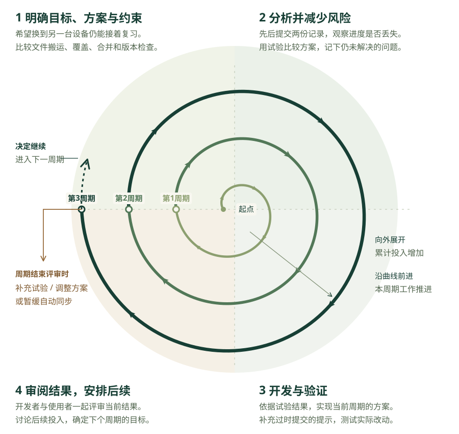

复习清单现在已经能够通过文件搬运进度。如果使用者经常在电脑和手机之间切换，每次都下载、传送和导入文件，就会有些麻烦。假设他提出了新的需要：“我希望在电脑上复习完以后，手机打开清单就能看到最新进度；手机暂时断网时，也要能继续记录。”因此，我们准备为清单增加自动同步功能。
为了让两台设备交换进度，我们可以在服务端保存一份共享记录。设备联网时先读取这份记录，使用者修改完成状态以后，设备再上传修改结果。服务端收到数据后，可以用设备提交的整份进度替换共享记录。这种做法需要考虑一个问题：手机断网期间，使用者可能已经在电脑上修改了进度。手机重新联网时，仍可能保留断网前的旧状态。
假设两台设备最初都读到了三项未完成的进度。随后，使用者在电脑上完成了课堂笔记对应的 r001，并上传了修改后的进度。接着，他在手机上完成了矿物识别对应的 r002。由于手机还没有读取电脑上传的新进度，手机里的 r001 仍然是未完成。如果手机也上传整份记录，服务端就会把共享记录中的 r001 改回未完成，覆盖电脑刚保存的完成状态。
- r001 / 课堂笔记
- 未完成
- r002 / 矿物识别
- 未完成
- r003 / 练习题
- 未完成
- r001 / 课堂笔记
- 已完成
- r002 / 矿物识别
- 未完成
- r003 / 练习题
- 未完成
- r001 / 课堂笔记
- 变回未完成
- r002 / 矿物识别
- 已完成
- r003 / 练习题
- 未完成
如果我们先让编程助手写好登录页、同步按钮和自动上传代码，等到后面才发现进度会被覆盖，就需要重新修改数据保存和提交方式。自动上传代码会受到这些改动的影响，页面也需要补充相应提示。
如果使用者已经开始使用自动同步，并保存了复习进度，我们这时才发现问题，就需要向使用者说明进度丢失的原因并道歉。我们也要修复提交规则，测试修复后的版本，防止其他记录继续被覆盖。没有备份或历史记录时，已经丢失的进度可能无法找回。因此，在继续编写整套同步功能以前，我们需要先尝试两台设备先后提交时会发生什么问题。
这个例子中的风险可以具体写成：“手机保留旧进度时，如果服务端直接接受整份覆盖，电脑刚保存的完成记录可能丢失。”为了判断这种覆盖是否容易在日常使用中发生，我们还需要向使用者了解实际操作。例如，他是否经常在断网时复习？他会不会交替修改两台设备上的进度？他是否需要取消某项内容的完成状态，以便以后重新复习？
同步按钮的位置也会影响使用是否方便。调整位置通常涉及少量界面代码，我们可以移动按钮后请人试用。进度提交规则则会影响数据怎样保存，以及两台设备的修改怎样合在一起。如果在规则确定以前就编写自动上传代码，后续改变规则时，这些代码也可能要一起修改。因此，我们先通过实验比较提交规则，再安排依赖这些规则的开发工作。
我们可以考虑以下几种办法：
- 如果继续使用文件导入，使用者仍然需要手动下载和传送文件。不过，已有功能可以继续使用，我们也有时间弄清楚自动同步应该怎样处理两台设备的修改。
- 如果希望省去手动搬运文件的操作，可以尝试由设备上传整份进度，再由服务端直接替换共享记录。这种做法容易实现，但会出现前面看到的覆盖问题，需要先解决这个问题才能交给使用者。
- 为了保留两台设备分别完成的内容，我们也可以尝试合并已完成项。按照 1.4 中讨论过的规则，同一条目在任意一边已经完成，合并后就保留为已完成。采用这个办法时，还需要考虑使用者主动取消完成状态的情况。
例如，两台设备原先都把课堂笔记对应的 r001 记为已完成。使用者在电脑上取消了这项勾选，希望以后重新复习。手机还保留着 r001 已完成的旧状态，使用者随后又在手机上完成了矿物识别对应的 r002。如果手机提交时采用“任意一边完成就算完成”的规则，r001 就会重新变成已完成。因此，我们还需要讨论怎样保留取消勾选的操作，再决定是否采用这种合并规则。
为了判断设备提交的进度是否已经过时，我们可以在共享记录中增加一个版本号。每次接受修改后，服务端都增加这个版本号。设备读取进度时，会同时保存读到的版本号，上传修改时再将它作为基础版本提交。服务端比较基础版本与当前版本：两者一致时接受写入，版本不同则拒绝覆盖，并提示设备读取最新进度。
仍以取消课堂笔记勾选的情况为例。两台设备最初都读到了第 7 版共享记录，其中课堂笔记为已完成。使用者在电脑上取消了这项勾选并上传，服务端就把共享记录更新为第 8 版。接着，他在手机上完成了矿物识别并提交，但手机带来的基础版本仍然是第 7 版。服务端比较这两个版本号，就能发现手机尚未读取电脑刚上传的进度。
这里还需要区分两种版本。进度文件中的 formatVersion 标明文件采用的数据格式，导入程序据此选择读取规则。共享记录的版本号则随着进度更新而增加，用来判断设备提交修改时依据的是哪一份记录。
在刚才的例子中，服务端拒绝手机的旧版本提交以后，共享记录会保留电脑上传的结果。手机上刚完成的矿物识别仍然留在本机，接下来还需要把这项修改同步到服务端。为此，我们需要继续讨论：手机读取最新记录以后，怎样保留电脑上取消课堂笔记勾选的结果，同时保存手机上矿物识别的完成状态？如果同一条目出现冲突，又应该怎样请使用者选择？
在真实服务中，版本比较和写入还需要作为一整次提交完成。假如两个设备都读到了第 7 版，它们就可能先后通过比较。如果第一个设备通过比较后尚未写入，第二个设备也通过了比较，随后两份数据仍可能互相覆盖。因此，服务端需要保证从比较版本到完成写入这段时间内，其他提交无法改动同一份共享记录。
你可以先打开同步冲突实验，尝试两台设备先后提交进度。实验页面用内存保存电脑记录、手机记录和共享记录，所有提交都在当前页面中完成。原清单的进度仍保存在它自己的浏览器存储中，与实验数据分开。刷新实验页面后，这三份记录会恢复到初始状态。
实验开始以前，我们需要确定各组操作应当保留哪些进度。下面两组操作都要求手机暂时保留旧记录，以复现手机尚未读到电脑修改时提交的情况：
- 两台设备最初都没有完成记录。使用者在电脑上完成课堂笔记并提交，随后在手机上完成矿物识别。手机仍带着原先的课堂笔记状态提交后，共享记录应当保留这两项内容的完成状态。
- 两台设备最初都将课堂笔记记为已完成。使用者在电脑上取消课堂笔记的勾选并提交，随后在手机上完成矿物识别。手机仍带着课堂笔记已完成的旧状态提交后，共享记录应当保留课堂笔记未完成、矿物识别已完成的状态。
- 如果程序拒绝手机的旧版本提交，共享记录应当保留电脑上传的进度。页面还需要明确提示，手机上矿物识别的完成状态尚未同步。
接着，我们分别执行这些操作，把实际结果与上面的预期逐项对照。如果某个提交办法覆盖了应当保留的状态，就记录发生覆盖时的两份数据，再据此修改或放弃这个办法。
| 要尝试的情况 | 观察什么 | 怎样影响下一步 |
|---|---|---|
| 在电脑上完成 r001，随后在手机上完成 r002 | 手机提交后，r001 是否被改回未完成 | 若完成状态被覆盖，就先修改提交规则，再考虑增加自动上传功能 |
| 在电脑上取消 r001 的勾选，随后用手机提交 r002 的完成状态；手机仍保留 r001 的旧值 | 合并是否把 r001 重新标成已完成 | 若取消勾选的结果丢失，就修改合并规则，保留这项内容的未完成状态 |
| 手机按第 7 版提交，共享记录已经是第 8 版 | 是否拒绝覆盖，是否说明手机的修改尚未同步 | 能够发现过时提交后，还要继续实现读取新记录和冲突处理 |
完成实验以后，我们要保存实际操作和结果，再决定是否继续采用某个办法。例如，整份覆盖如果让课堂笔记的完成状态丢失，我们就可以记录两台设备提交的数据，说明覆盖发生在哪一步，并据此放弃当前的覆盖规则。
如果版本检查能够拒绝旧数据，我们可以继续尝试手机收到拒绝提示以后该怎样操作。程序需要先保留手机上的修改，再读取最新共享记录，让使用者查看哪些状态发生了冲突。冲突解决以后，手机才能再次提交。开发这些功能还需要时间，我们可以结合自己的能力和使用者的需要，决定继续开发，或者暂时保留文件搬运方式。
当前页面实验要回答的是：两台设备先后提交时，不同规则会怎样改变共享记录？为此，我们在内存中保存设备进度，用函数执行提交，并核对每个条目的状态。之后如果准备采用真实同步服务，还需要继续试验。例如，让两台设备同时提交，观察版本比较与写入能否正确配合。针对上传期间网络中断的情况，我们还可以尝试断网后重新连接，查看能否继续保存修改。这些实验要根据实际遇到的风险安排。
我们目前担心旧进度覆盖新记录，所以先试验提交规则，再根据结果选择后续做法。如果以后遇到的问题变成手机浏览器能否支持某项操作，就需要改为在目标设备上试用。像这样，根据可能造成损失或返工的问题来安排开发工作，并通过试验帮助选择方案，就是风险驱动的思路。
Boehm 的螺旋模型将这些工作组织成反复进行的开发周期。每个开发周期开始时，开发者先明确当前要达到的目标，并比较可选方案。对于可能影响目标的问题，开发者需要安排相应试验，根据结果决定怎样实现和验证本周期的方案。周期结束前，开发者与使用者等相关人员一起审阅结果，讨论是否继续投入，以及下一个开发周期要解决什么问题。

在复习清单项目中，我们可以把第一个开发周期的目标定为：比较提交规则，找出会覆盖进度的情况。这个周期需要先明确应当保留哪些状态，再用页面原型实现几种规则，执行前面的实验，最后与使用者讨论结果。前面的几组实验都可以安排在这个开发周期中。其中，使用者在电脑上将课堂笔记勾选为完成，以及取消这项勾选，会对合并结果提出不同要求，需要分别尝试并记录。
如果第一个开发周期结束时，我们决定继续采用版本检查，就可以为下一个开发周期确定新的目标：在真实服务中实现版本比较与写入，并试验两台设备同时提交时能否保留正确进度。完成这些工作后，再通过评审决定是否继续开发断网重试等功能。如果讨论中发现使用者并不需要自动同步，已有文件搬运方式已经足够方便，我们也可以暂缓这项功能。
这些安排体现了风险怎样影响开发顺序。我们先担心旧进度覆盖新记录，所以优先比较提交规则。页面实验如果发现某种规则会覆盖完成状态，就会影响后续的数据保存方案。等到转向真实服务时，同时提交又成为需要解决的问题，我们就据此安排新的试验。每个开发周期的工作都应当能够联系到当时需要解决的具体问题。
在这些开发周期中，我们还可以采用前面介绍过的做法。为了尽早比较提交规则，我们先开发页面原型。规则确定以后，可以先交付手动同步功能，让使用者自己点击按钮上传与读取进度。如果以后确实需要自动同步，再增加自动上传和读取。
按风险安排工作，需要判断哪些问题值得优先试验，以及试验需要投入多少时间。对于进度覆盖，我们有必要比较提交规则，因为后续自动上传会依赖这些规则。按钮位置则通常容易调整，可以改动后请使用者尝试。为了确认界面修改没有影响原有功能，还需要重新测试勾选和保存。
接下来，你可以下载同步实验、记录模板与提示词，在自己的工作目录中运行。也可以先使用在线实验，分别尝试两种使用情况与三种提交方式，把实际结果记入 experiment-record.md。你可以把下面的提示词交给编程助手，让它先整理实验要求。然后，你再阅读它写出的内容，核对是否符合前面讨论的使用需要。
阅读当前复习清单和同步实验，先整理实验要求。
把使用者希望怎样同步进度写入 risk-register.md，
说明当前准备比较哪些提交办法。需要询问的内容标为待询问。
分别整理以下两种场景：
1. 两台设备最初都没有完成记录。使用者先在电脑上完成课堂笔记并提交，
再在手机上完成矿物识别。手机仍带着原先的进度提交。
2. 两台设备最初都把课堂笔记记为已完成。使用者在电脑上取消这项勾选并提交，
再在手机上完成矿物识别。手机仍保留课堂笔记已完成的旧状态。
针对每种场景，分别写出预期保留的状态，说明哪些状态可能被覆盖。
再说明准备通过什么操作比较提交办法，得到什么结果以后可以决定下一步。
风险发生的概率和使用者意见，需要根据实际调查填写。
尚未调查的内容保留为未知。开始操作以前，你可以选择一种使用情况和提交方式，预测三个条目最终应是什么状态。点击“模拟电脑端修改并提交”，等共享记录更新后，再点击“模拟手机端勾选并提交”。操作以后，分别记录共享进度与手机本地进度。如果版本检查拒绝了手机提交，共享记录应保留电脑上传的结果，手机上的矿物识别则仍为已完成、尚未同步。完成这一组记录后，点击“恢复当前场景”，才能重新选择提交方式，比较下一组结果。
阅读同步实验代码，说明 submitProgress 怎样接收设备进度，
三种提交方式分别怎样更新共享记录或拒绝提交。
根据我提供的实际操作结果更新 experiment-record.md。
每组实验先记录两台设备各项内容的初始状态，再记录提交顺序。
提交以后，分别填写共享记录和手机本地记录中的状态与版本号。
版本检查拒绝手机的提交时，写明手机上哪项修改仍未同步。
我没有提供结果的实验组合标为待执行。
需要修改实验时，所有读写都限定在当前页面内存中。
测试完成后，逐项说明实验已经验证的行为。
同时提交、网络中断和重复请求等真实服务测试，另外注明是否实际执行。比较结果以后，你可以把记录交给编程助手，让它根据实验中出现的问题提出后续建议。阅读建议时，先核对它有没有把页面实验与真实服务中的测试分开说明。然后，你需要与使用者讨论尚未确定的行为。如果他需要在断网时复习，就要考虑重新联网以后怎样提交修改；如果同一条目在两台设备上的状态冲突，还需要问他是否愿意手动选择。讨论清楚以后，再决定怎样修改正在使用的清单。
读取 risk-register.md 和 experiment-record.md，编写 decision.md。
对于实验中发生的覆盖，指出提交前后的具体状态，
根据这些结果说明原规则需要怎样修改。
对于版本检查被拒绝的情况，说明手机上还保留着哪项修改，
再提出接下来准备怎样读取新记录和处理冲突。
分别讨论以下后续安排，并写明各自需要完成的工作：
1. 继续试验同步规则，并根据结果完成同步功能。
2. 先实现手动同步，让使用者通过按钮上传与读取进度。
3. 暂缓同步，继续使用已有文件搬运方式。
如果建议继续，明确下一个开发周期要解决什么问题。
说明准备怎样试验，以及由谁评审实际结果并决定后续投入。
当前只整理建议，正在使用的清单保持原状。
涉及用户数据的后续改动，需要先确认备份内容和可用的恢复办法。